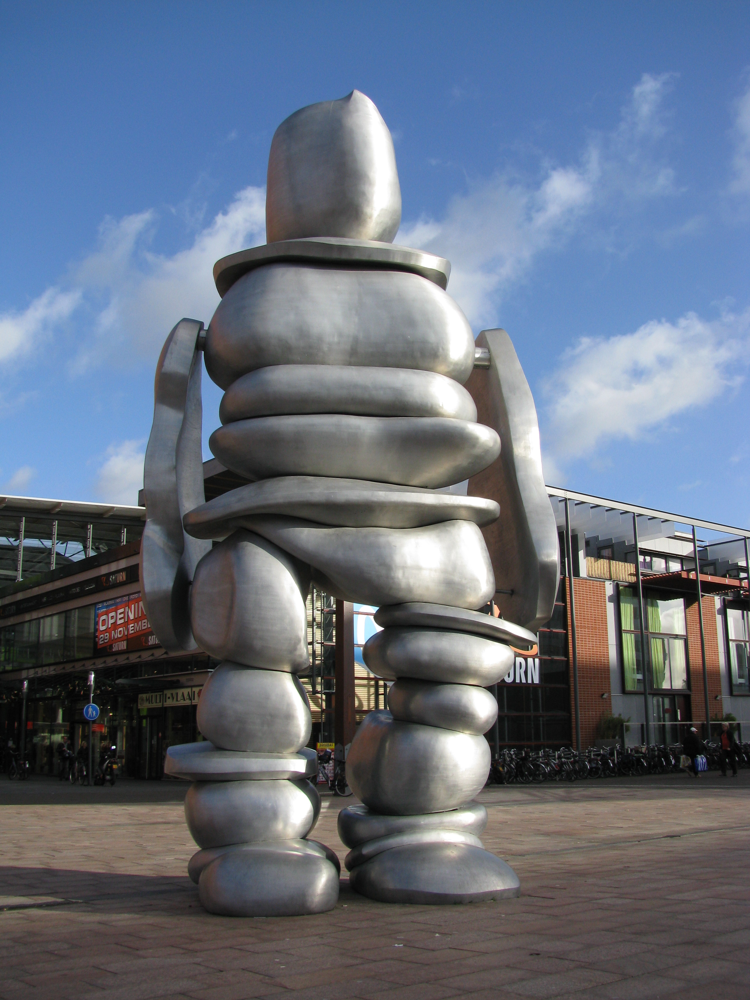
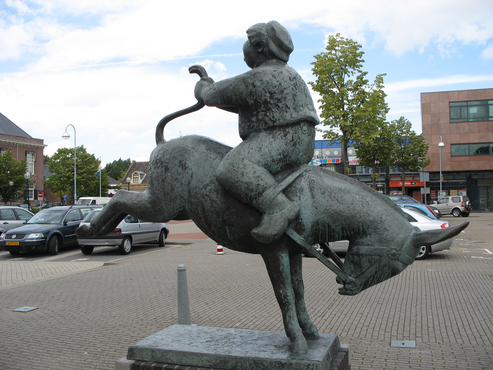
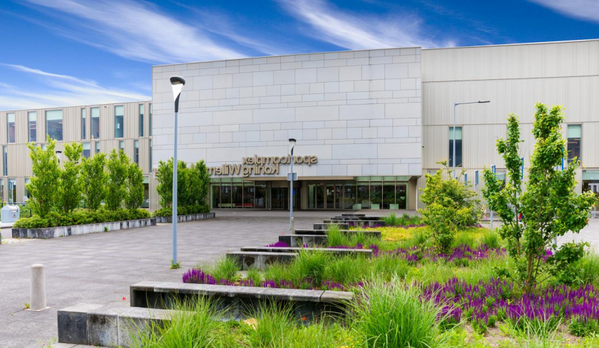
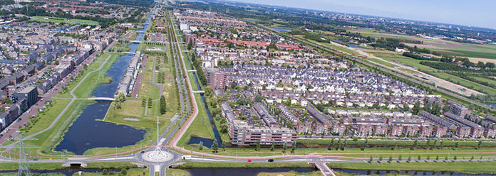

This website uses cookies. By using this website you agree to the terms
Taekwondo Floriande
In Hoofddorp
Hoofddorp
Hoofddorp is a city in the Netherlands. It used to be an old village but in the last 2 decades
a lot of new buildings have been built here transforming it into a city. Hoofddorp has a giant
city centre with lots of clothing stores and everything else you can
desire. From freshly baked chicken to the newest piece of technology, you can find it here.


Hoofddorp is divided in 7 big neighborhoods: City centre, Bornholm, Floriande, Graan voor Visch,
Overbos, Pax and Toolenburg. Hoofddorp Counts a total of 75.5 thousand inhabitants and is
expected to grow to over 90 thousand in 2020. because despite most of Hoofddorp having been
built in the last 2 decades, they're far from being done expanding.
There is also a big industrial area in the eastern side Hoofddorp. This is quite popular with
companies because of its proximity to the nearby train station, which is a 4 minute train ride
away from the Netherlands biggest airport Schiphol.
Floriande
Floriande is the biggest neighborhood within Hoofddorp with over 17 thousand people, despite being only added relatively recently. Floriande contains mostly homes but that doesn’t mean there isn’t anything to do, quite the opposite.
The most recent addition has been the giant sport centre King Willem-Alexander, which is obviously named after the dutch king. The sports centre was built to celebrate the coronation of King Willem-Alexander and contains several halls where people can do sports like basketball, indoor football, badminton, gymnastics or judo but also has 2 swimming pools where people can do water polo, competitive swimming, underwater hockey synchronised swimming or just go for a leisurely swim.

There is also a baseball stadium on the outskirts of Floriande, Which was built with a goal of getting top class Baseball to Floriande. It has 2 full sized baseball fields, 3 medium sized fields and 3 small fields for the kids.

There is also a decently sized shopping centre in Floriande, here you can find all your basic necessities. You can buy clothes here. Or order food if you don’t want to cook for yourself, you can choose from pizza, indian, chinese or the snackbar. furthermore there is a bookstore that doubles as a post office, a Kruidvat where you can get all your dermatological needs.
There is lots of green in Floriande, a lot of parks, trees and grass.The main road through Floriande even has a row of trees and grass in the middle and on both sides. There is even a forest just outside of Floriande. But in all that green there are also some things to do, There is football fields, playgrounds and even a skatepark. The skatepark has 2 half pipes and plenty of ramps and railings to do all kinds of tricks and is usually populated by older and younger kids alike. So there is always someone to talk to or get advice from. There are even people who go here by car and, due to the lack of parking space for the skatepark, have been forced to park in front of the surrounding houses to the frustration of the people who live there. however a parking lot will not be placed because they want the area to remain green.
Weather you're a beginner or have a lot of experience in Taekwondo, you can learn more in this
club. You'll learn to do as much damage as possible with hands and/or feet to everything from
wooden planks to people.
Started as a friendgroup in 2006, grown to a club in 2009, we have alot of experience. We are a club for the newest beginner to the most senior players, all are welcome.
Are you always too busy or do you not feel like going to the normal gym, but do you want to see results? Happy Bodies offers a new way of fitness; the Milon Circle, the alternative to the normal gym. With the Milon Circle you achieve results with only 35 training sessions once every 5 days. Experience the Milon Circle for yourself!
Want to play tennis? come play tennis with us! We don't have a website and our address doesn't have a tennis court anywhere in sight, so this is probably a tax racket, but whatever this assignment is about the markup not the text.
We don't have a website but you can find us at Vuurboetsduin 69 in Hoofddorp.
We train football, but not just football. We beleive that ,for the best results in football, you must train not just your football skills but also concentration, balands and confidence.
Our focus is on the youth, by getting in touch with rugby early they'll learn it very well. We strive to become a club where everyone can come to express their passion for rugby as a viewer or participant.
We teach gymnastics to kids for fun and to adults who want to learn to precisely controll their body. We offer classes on Aerobics(bodyshape and steps), Fysio Aerobics and condition training.